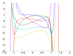
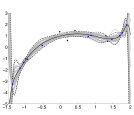

05 Gaussian Process & Bayesian Models
Advanced Machine Learning
Probabilities and Bayesian Reasoning
Gaussian (normal) distribution
Is characterized by mean \(\mu\) and variance \(\sigma\). The probability distribution is given as
\[ p(X = x) = \mathcal{N} (x | \mu, \sigma^2) = \frac{1}{\sqrt{2\pi \sigma^2}} e^{-\frac{1}{2\sigma^2}(x-\mu)^2} \]
The multivariate Gaussian for \(D\) dimensions is given as
\[ \mathcal{N} (\vec{x} | \vec{\mu}, \Sigma) = \frac{1}{(2\pi)^{D/2} (det\ \Sigma)^{1/2}} exp\ (-\frac{1}{2} (\vec{x}-\vec{\mu})^T\Sigma^{-1}(\vec{x} - \vec{\mu}) ) \]
For Visual Exploration of Covariance and GP
Bayes’ rule
… tells us how to invert conditional probabilities:
\[\begin{align*} p(A,B) &= p(A|B)p(B) = p(B|A) p(A) \\ \Rightarrow p(B|A) &= \frac{p(A|B) p(B)}{p(A)} \end{align*}\]
Here,
- \(p(B)\) is the a priory probability, or the prior,
- \(p(A|B)\) is the likelihood of \(B\) for a fixed \(A\),
- and \(p(B|A)\) is the a posteriori probability of \(B\) given \(A\).
Gaussian Process – Parametric View
Bayesian Inference
Our goal is to establish inferences between inputs and targets. This is the conditional distribution of the targets given the input.
Our training set \(\mathcal{D}\) consists of \(n\) observations: \[ \mathcal{D} = \{ (\vec{x}_i, y_i) | i = 1,...,n \} \]
which we can collect in the design matrix.
(Rasmussen and Williams 2006)
A prior on parameters
In a parametric model \(\mathcal{M}\), the model is defined by the structure and the parameters:
\[ f_w(\vec{x}) = \sum_{m=0}^{M} w_m \phi_m(\vec{x})\]
We can define a prior \(p(\vec{w} | \mathcal{M})\) for the parameters of the model – this determines the functions the model can generate.
- First, we are selecting a structure.
- Secondly, we are selecting a probability distribution for the parameters.
Bayesian Analysis of Linear Regression
We do regression on a function \(t(\vec{x}) = \vec{x}^T \vec{w}\) with added Gaussian noise.
This leads to observation \[ y = f(\vec{x}) + \varepsilon, \varepsilon \sim \mathcal{N}(\vec{0}, \sigma^2_n) \]
We can calculate the likelihood of the data (due to i.i.d.):
\[\begin{align*} p(\vec{y}| \vec{X}, \vec{w}) \end{align*}\]
A prior on the parameters is required and we use a zero mean Gaussian with covariance matrix \(\Sigma_p\):
\[ \vec{w} \sim \mathcal{N}(\vec{0}, \Sigma_p) \]
Inference in Bayesian linear model
We are looking for the posterior distribution over the weights which we get through Bayes’ rule:
\[ \text{posterior} = \frac{\text{likelihood } \times \text{ prior}}{\text{marginal likelihood}},\ p(\vec{w} | \vec{y}, \ X) = \frac{p(\vec{y}|X, w) p(\vec{w})}{p(\vec{y}| X)} \]
Parametric View
\[ f(\vec{x}) = \vec{x}^T \vec{w}, \ y = f(\vec{x}) + \varepsilon, \varepsilon \sim \mathcal{N} ( 0, \sigma_n^2) \]
Reminder Gaussian probability distribution: \[ g(x) = \frac{1}{\sqrt{2 \pi}\sigma} e^{-\frac{1}{2\sigma^2}(x-\mu)^2}, \mathcal{N} ( \mu, \sigma^2) \]
Likelihood: \[\begin{align*} p (\vec{y} | \mathbf{X}, \vec{w} ) &= \prod_{i=1}^n p( y_i | \vec{x}_i, \vec{w}) = \prod_{i=1}^n \frac{1}{\sqrt{2 \pi}\sigma_n} e^{- \frac{(y_i - \vec{x}^T \vec{w})^2}{2\sigma_n^2}} \\ &= \frac{1}{(2 \pi\sigma_n^2)^{n/2}} e^{- \frac{1}{2\sigma_n^2} |\vec{y} - \vec{x}^T \vec{w}|^2} = \mathcal{N} ( \mathbf{X}^T\vec{w}, \sigma_n^2 \mathbf{I}) \end{align*}\]
Setting the prior
Use a zero mean Gaussian as prior on parameters:
\[ \vec{w} \sim \mathcal{N} ( 0, \Sigma_p) \]
\[\begin{align*} \text{posterior} &= \frac{\text{likelihood} \times \text{prior}}{\text{marginal likelihood}}, \\ p(\vec{w}| \vec{y}, \mathbf{X}) &= \frac{p(\vec{y}|\mathbf{X}, \vec{w}) p(\vec{w})}{p(\vec{y} | \mathbf{X})} \end{align*}\]

Deriving the posterior
Importantly, the marginal likelihoodis independent of the weights and acts as a normalizing constant which does not affect the search for the best weights.
\[ p(\vec{y} | \mathbf{X}) = \int p(\vec{y} | \mathbf{X}, \vec{w}) p(\vec{w}) d\vec{w} \]
\[\begin{align*} p(\vec{w}| \vec{y}, \mathbf{X}) &\varpropto e^{- \frac{1}{2\sigma_n^2}(\vec{y} - \mathbf{X}^T \vec{w})^T (\vec{y} - \mathbf{X}^T \vec{w})} e^{ - \frac{1}{2}\vec{w}^T \Sigma_p^{-1}\vec{w} } \\ &\varpropto e^{- \frac{1}{2}(\vec{w} - \bar{\vec{w}})^T (\frac{1}{\sigma_n^2} \mathbf{X} \mathbf{X}^T + \Sigma_p^{-1}) (\vec{w} - \bar{\vec{w}})}, \bar{\vec{w}} = \sigma_n^{-2} (\sigma_n^{-2} \mathbf{X} \mathbf{X}^T + \Sigma_p^{-1})^{-1}\mathbf{X}\vec{y} \end{align*}\]
The form of the posterior distribution is again Gaussian (recognize the form) with mean \(\bar{\vec{w}}\) and covariance matrix \(\mathbf{A}^{-1}\):
\[\begin{align*} p(\vec{w}| \vec{y}, \mathbf{X}) &\sim \mathcal{N}( \bar{\vec{w}} = \frac{1}{\sigma_n^2}\mathbf{A}^{-1}\mathbf{X}\vec{y}, \mathbf{A}^{-1} ),\ \mathbf{A} = \sigma_n^{-2} \mathbf{X} \mathbf{X}^T + \Sigma_p^{-1} \end{align*}\]
The mean of this posterior distribution maximizes the (a posterior = MAP) estimate of \(\vec{w}\).
Example of Bayesian linear model: Condition on data
Slope is much more constrained/determined than intercept term.
Example of Bayesian linear model: Condition on data
In the posterior, the intercept is been pulled (by the prior on the weights) towards zero.
Predictive Distribution
We are not choosing (as we would in non-Bayesian schemes, MAP) a specific weight. Instead, we work with the distribution over parameters which is a distribution over functions.
For prediction, we average over all possible parameters. This gives us a predictive distribution \(f_*\) for a test case \(\vec{x}_*\)
\[\begin{align*} p(f_*| \vec{x}_*, \mathbf{X}, \vec{y}) &= \int p(f_*| \vec{x}_*, \vec{w}) p(\vec{w}| \mathbf{X}, \vec{y}) d\vec{w} \\ &= \mathcal{N} (\frac{1}{\sigma_n^2}\vec{x}_*^T \mathbf{A}^{-1}\ \mathbf{X} \vec{y}, \vec{x}_*^T \mathbf{A}^{-1}\vec{x}_*). \end{align*}\]
This predictive distribution is again Gaussian.
Example of Bayesian linear model: Predcition
Superimposed on the data is the predictive mean plus contours for two standard deviations of the (noise-free) predictive distribution \[p(f_∗ | \vec{x}_∗, \mathbf{X}, \vec{y}).\]
which is a Gaussian probability distribution for every \(x_*\) (see last slide): \[\mathcal{N} (\frac{1}{\sigma_n^2}\vec{x}_*^T \mathbf{A}^{-1}\ \mathbf{X} \vec{y}, \vec{x}_*^T \mathbf{A}^{-1}\vec{x}_*). \]
Gaussian Processes – Bayesian Inference
Prior
Posterior
We are following (Rasmussen and Williams 2006) and (Rasmussen 2016).
Gaussian Processes Overview
- aware of uncertainty of the fitted GP that increases away from the training data,
- let you incorporate expert knowledge,
- are non-parametric,
- need to take into account the whole training data for prediction.

Further reading: (Rasmussen and Williams 2006).
Two Bayesian Perspectives on Functions
Create Gaussian Distribution for each variable – distribute these through your space.
Informally such an infinite long vector constitutes a function.
Prior

Posterior

A Gaussian process is a collection of random variables, any finite number of which have (consistent) Gaussian distributions.
Gaussian Process – Distribution over Parameters
Example: A prior distribution over functions
As an example,
- we choose a polynomical model with \(M = 17\): \(\phi_m(\vec{x}) = \vec{x}^m\)
- as a prior for the parameter distribution we choose a normal distribution: \[p(w_m) = \mathcal{N} (w_m | \mu, \sigma_w^2)\]

Shown is one example for which we sampled all the parameters from the normal distribution.
Distribution over functions
- We have seen now an algorithm for building a model through selecting the model type and sample parameters.
But we are interested in predictions of the model and not the parameters as such.
Secondly, we want to work directly in the space of functions. This becomes possible as a distribution over parameters induces a distribution over functions \(p(\vec{f} | \mathcal{M})\).
This would be simpler and allow for more efficient inference.
Posterior probabilities for a function
Our goal is to use our functions \(\vec{f}\) to make predictions for novel inputs. But until now, we have only looked at the prior for these functions \(p(\vec{f}| \mathcal{M})\).
We are interested in the posterior distribution of the function – that is which is conditioned on our evidence:
\[\begin{align*} p(\vec{f} | \vec{y}) = \frac{p(\vec{y}|\vec{f}) p(\vec{f})}{p(\vec{y})} \end{align*}\]

Sample from the posterior (Rasmussen 2016)
- we can consider this as: when sampling from the prior, allow only sampled functions that fit the data (go through the data points)
- closeness to the data is given through the likelihood \(p(\vec{y}|\vec{f})\)
Drawback of polynomials as priors for functions

Shown are samples for parameters for polynomial functions of different order (Rasmussen 2016).
Drawback of sampling over parameters
- Distributions over parameters induce distribution over functions.
- But sampling over parameter space and using priors over functions might not lead to good results (see example for polynomials).
- Therefore, we want to work directly on priors and probability distributions over functions.
- This leads to the question of how probability distribution over functions look like and how they could be specified.
Gaussian Processes
Prior
Posterior
We are following (Rasmussen and Williams 2006) and (Rasmussen 2016).
References
Rasmussen, Carl Edward. 2016. “Probabilistic Machine Learning.” Lecture Notes, University of Cambridge.
Rasmussen, CE., and CKI. Williams. 2006. Gaussian Processes for Machine Learning. Adaptive Computation and Machine Learning. Cambridge, MA, USA: Biologische Kybernetik; Max-Planck-Gesellschaft; MIT Press.